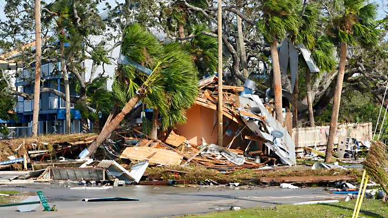

Welcome to Blue Tide Chapel
Find peace and community from anywhere. Join our online gatherings, virtual meditations, and moments of reflection that bring solace and connection, wherever you are.
Find peace and community from anywhere. Join our online gatherings, virtual meditations, and moments of reflection that bring solace and connection, wherever you are.
At Blue Tide Chapel, we stand firmly on the foundation of the Holy Scriptures as the inspired and authoritative Word of God and the teachings of our Lord Jesus Christ.
We affirm the core truths of the Christian faith as expressed in the Nicene-Constantinopolitan Creed, which articulates our belief in the Trinity of God as Father, Son, and Holy Spirit.
These essential beliefs shape our understanding of salvation, the Church, and the kingdom of God, guiding us in worship, service, and daily living out our faith. We seek to glorify God through Christ-centered worship, faithful discipleship, and compassionate service to others.
The Bible We believe the Bible, composed of the Old and New Testaments, is the inspired, and authoritative Word of God. It is infallible in matters of doctrine and morality. The Bible was conveyed through human authors under divine guidance and serves as our ultimate guide for faith and practice.
The Holy Trinity We believe in one God, eternally existing in three persons: Father, Son, and Holy Spirit. Each person of the Trinity is fully God, sharing the same essence and working together in creation, redemption, and sanctification.
Jesus Christ We believe in the deity of our Lord Jesus Christ, His virgin birth, His sinless life, His miracles, His sacrificial death on the cross for our sins, His bodily resurrection, His ascension to the right hand of the Father, and His future return in power and glory.
Salvation We believe that salvation is by grace through faith in Jesus Christ alone. It is a gift of God, not earned by works, but freely given to all who repent and believe in Him. Through Christ's death and resurrection, we are reconciled to God, forgiven of our sins, and granted eternal life.
The Holy Spirit We believe in the present work of the Holy Spirit, who dwells in every believer, empowering us for godly living, spiritual growth, and service. The Holy Spirit convicts the world of sin, righteousness, and judgment and leads believers into all truth.
The Church We believe the Church is the body of Christ, composed of all believers, called to worship, fellowship, discipleship, and the proclamation of the Gospel. The local church is a vital expression of the universal Church, where believers gather for teaching, prayer, and community.
The Sacraments We believe in the practice of two ordinances established by Jesus Christ: Baptism and the Lord's Supper. Baptism is the public declaration of faith, symbolizing the believer's identification with Christ's death, burial, and resurrection. The Lord's Supper is a commemoration of Christ's sacrifice, celebrated in unity with fellow believers.
The Nicene-Constantinopolitan Creed We affirm and uphold the faith expressed in the Nicene-Constantinopolitan Creed of 381 AD, recognizing its declaration of the triune God, the full divinity of Jesus Christ, the work of the Holy Spirit, and the unity of the one, holy, catholic (katholikos or universal), and apostolic Church.
The Return of Christ We believe in the imminent and personal return of Jesus Christ. He will return to judge the living and the dead, establish His kingdom, and bring about the fullness of God's redemptive plan.
The Resurrection and Eternal Life We believe in the bodily resurrection of all people. Those who are in Christ will experience eternal life in the presence of God, while those who reject Him will face eternal separation.
Christian Living We believe that as followers of Christ, our communion is to live lives that reflect His love, holiness, and grace. By the power of the Holy Spirit, we seek to grow in Christlikeness, love one another, and reach out to the world with the Gospel.
Blue Tide Chapel is an online community where individuals can find peace, connection, and spiritual reflection from anywhere in the world. Our mission is to provide a virtual space for people to meditate, worship, and contemplate while experiencing the tranquility of the blue tides that symbolize peace and renewal.
Founded on love, unity, and spiritual growth principles, Blue Tide Chapel welcomes all who seek solace in a nurturing and supportive environment. Whether you are joining us for a virtual service, meditation session, or a moment of quiet reflection, we are here to guide you through your spiritual journey.
Our diverse community embraces people of all backgrounds and beliefs. We believe in the power of collective spirituality, where shared experiences lead to deeper understanding and personal transformation through Christ.
Besides our disaster response services, we are deeply committed to serving those who serve others. Our chaplains provide spiritual support and counseling to members of law enforcement and medical professionals, recognizing the immense pressures and emotional challenges they face in their daily work. Our chaplaincy services offer a confidential and compassionate space for individuals to seek guidance, prayer, and solace, regardless of their religious background. Our skilled chaplains provide emotional and spiritual care tailored to the unique needs of both law enforcement officers and healthcare workers.
Blue Tide Chapel stands in solidarity with those impacted by disasters. Our mission, rooted in faith, provides Christ-centered support, comfort, and resources to communities in crisis. We believe people need physical aid and the reassurance of God's presence and hope.
Our calling is to respond compassionately, offering tangible aid and spiritual nourishment to uplift those enduring hardship. We provide pastoral care, prayer support, and a loving community to help individuals find strength in faith. Through our actions, we strive to reflect God's love, bringing hope and trusting His grace to heal those affected.
Blue Tide Chapel works alongside other faith-based organizations, churches, and partners to deliver holistic relief. Our outreach includes counseling, prayer vigils, and creating supportive, faith-filled spaces for emotional healing. We are devoted to ensuring no one feels alone, always pointing toward the enduring hope found in Christ.
We are proud to have a highly skilled and active Disaster Response Team. This team offers comprehensive on-the-ground support during times of crisis, with services guided by our faith in Christ, including:
Spiritual Counseling: The team is dedicated to providing comprehensive spiritual care, including prayer, scriptural insights, and pastoral support. This service aims to help individuals navigate life's challenges, find inner peace, build emotional resilience, and draw strength and hope from their faith. The focus is on encouraging spiritual growth and offering comfort through a Christ-centered approach, fostering both emotional healing and a deeper connection with God.
First Aid: The team is equipped to deliver immediate first aid and essential medical assistance in disaster zones. Focusing on addressing urgent physical needs, they provide care with a compassionate touch, seeing their medical efforts as a direct expression of faith. This service often includes wound care, basic trauma management, and helping stabilize individuals until more advanced medical care becomes available. In doing so, they aim to demonstrate God's love through tangible acts of service to those in need.
Nursing Care and Triage Support: The team includes registered nurses who have received specialized training in emergency response and disaster situations. These nurses offer critical care, conduct health assessments, provide wound management, and oversee the triage process to prioritize medical attention where it's most needed. Through their skilled and compassionate care, they mirror God's healing presence, ensuring that even in the most chaotic circumstances, individuals receive the medical attention and empathy they require.
FAA Licensed Drone Surveying: The team includes FAA-licensed commercial drone pilots to conduct aerial surveys over disaster-stricken regions. These drones help assess damage, identify areas most in need of assistance, and locate individuals who may be stranded or isolated. By capturing real-time footage from a bird's-eye view, they can effectively guide the distribution of resources and inform recovery strategies. The drone operations are essential for improving safety, efficiency, and accuracy in post-disaster recovery planning.
Business and Homeowner Recovery Assistance: The team offers a wide range of recovery services to business owners and homeowners affected by disasters. This assistance includes help with clean-up operations, debris removal, and restoring homes and properties. The team also helps individuals navigate the complexities of recovery plans, offering guidance on collaborating with local services and authorities. Throughout this process, spiritual and emotional support is a key focus, ensuring that those affected are not only helped physically but are also supported emotionally and spiritually as they rebuild their lives and properties.
Whether responding to natural disasters, emergencies, or other large-scale incidents, our team of faith-driven professionals and volunteers is prepared to deliver compassionate care focusing on serving Christ through service to others. We are committed to bringing the hope and healing of Christ to those in need, reinforcing our dedication to ministry, service, and outreach.